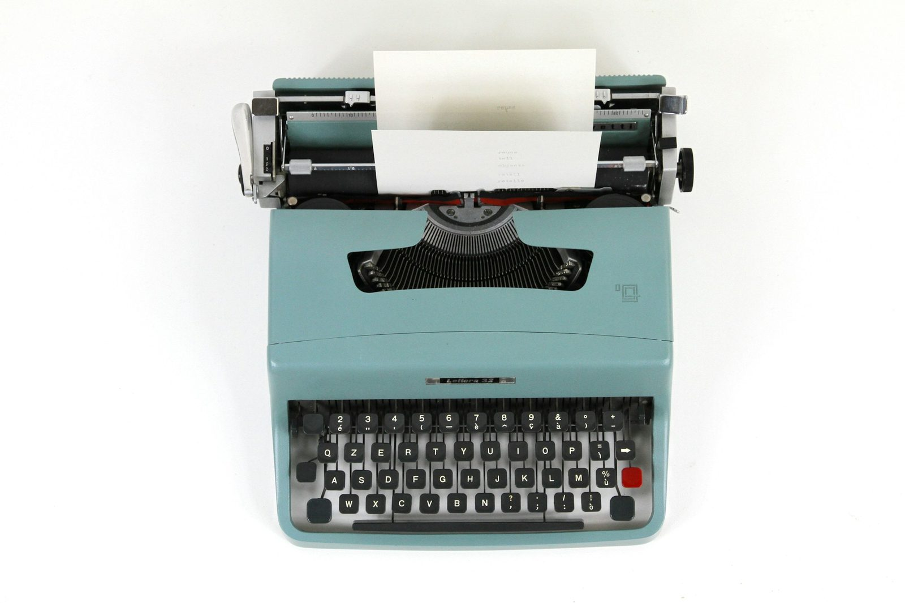
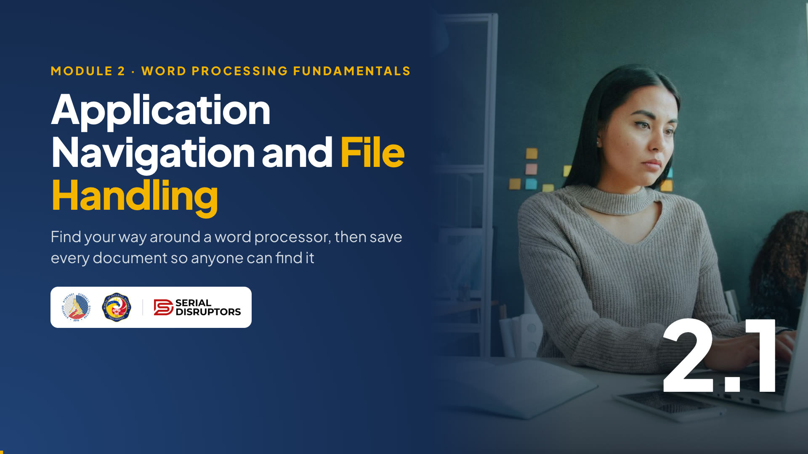

Module 2 · Word Processing Fundamentals
Find your way around a word processor, then save every document so you, and your office, can find it again.
Welcome to Module 2, Word Processing. Maayong hapon, mga kauban! This is the module where we stop talking and start making things.
Over the next four hours we will build one real document together: an invitation letter to a Digital Skills Workshop. Each topic adds a layer. Today in 2.1 we open the app, learn the screen, and save the letter properly. By 2.4 you'll be mail merging it to three colleagues.
Please open your word processor now, even before we start.
Warm-up · type in the chat
Microsoft Word
Google Docs
LibreOffice Writer or WPS
A typewriter, or I asked a co-worker to type it
Ask everyone to type A, B, C or D in the chat. Read out the mix. Most BIR desktops run Microsoft Word, so expect lots of A, but some will use Google Docs on their phones or at home.
Treat the D answers warmly: some of our senior colleagues learned on typewriters, and that's actually a great starting point, as the next slides show.
Note who uses which app so you can call on them during the hands-on parts.
By the end of this topic
Title bar, ribbon or menus, ruler, document area, status bar, views and zoom.
Know when to use Save and when to use Save As, and pick the right file format.
Name files well, export a PDF, and recover work after a brownout.
Keep this short. Three goals: navigate, handle files, protect your work.
Point out the running example. Everything in Module 2 builds on the same letter, so participants who keep their file safe today will have an easier time in every topic after this. That's why saving properly is lesson one, not an afterthought.
Ask: "Who has ever retyped a whole document because the file disappeared?" Expect a few hands.
The big idea

The typewriter is a great anchor because many offices here still had one in the corner not so long ago.
Three differences: you can edit without retyping, you can format after typing, and you can reuse the file. That last one is the real time-saver in government work: the same memo, notice or letter comes back every year with new dates.
Ask: "What document do you prepare every month that you could reuse from a saved file?"
What is a word processor?
Desktop app in Microsoft Office and Microsoft 365. Most office PCs have it. Saves as .docx.
Runs in the web browser with a Google account. Saves to Google Drive by itself as you type.
Free, open-source desktop app. Saves as .odt by default and also opens and saves .docx.
A word processor is application software, remember 1.1, for creating text documents: letters, memos, reports, notices.
Three common ones. Word is what most of you have at the office. Google Docs is free and online, handy at home or on your phone. LibreOffice Writer is free and works offline, a good option for a home PC or a kid's laptop.
WPS Office users: it looks a lot like Word, so follow the Word steps.
Step 1 · Open the app
Demo on your screen: press the Windows key, type "Word", Enter, then Blank document. Point out the templates beside it: résumés, letters, flyers. We start blank today.
For Google Docs, typing docs.new in the address bar creates a new document instantly. A nice trick for the home crowd.
On a Mac it's Cmd+Space then type Word. Ask: "Thumbs up when you see a blank page."
Step 2 · Know the screen
Sample Revenue District Office5
Administrative Section
Dear Colleagues,
The Administrative Section invites you to a one-day Digital Skills Workshop on Thursday, 19 November 2026
This is the map. Share your real Word window beside this slide and point to each part in order, 1 to 8.
Key points: the File tab is where all file handling lives: New, Open, Save As, Print, Export. If you can't see the Quick Access Toolbar, right-click the ribbon and choose Show Quick Access Toolbar; newer versions hide it by default.
Zoom only changes what you see. A common worry is "I zoomed to 150%, will it print big?" No.
Vendor-agnostic
| Part | 🟦 Microsoft Word | 🟩 Google Docs | 📄 LibreOffice Writer |
|---|---|---|---|
| Commands | Ribbon tabs | Menu bar + toolbar | Menu bar + toolbars (or View › User Interface › Tabbed) |
| File commands | File tab | File menu | File menu |
| Ruler | View › Ruler | View › Show ruler | View › Rulers |
| Word count | Status bar | Tools › Word count (Ctrl+Shift+C) | Status bar |
| Zoom | Slider, bottom right | Zoom box on the toolbar | Slider, bottom right |
| Saving | Save / Save As (AutoSave in the cloud) | Automatic, "Saved to Drive" | Save / Save As |
Don't read the whole table. Pick two rows and demo them if you have Docs open in another tab: the menus instead of a ribbon, and no Save button because Docs saves on its own.
The best tip on this slide is the last one: search the menus. In Word, click the search bar at the top and type "ruler" or "word count". In Google Docs press Alt+/. Participants who remember only this will never be stuck.
Try it now · in your own app
Click the timer to start 3 minutes. Ask participants to type 1, 2, 3, 4 in the chat as they go so you can see who is stuck.
Watch for people who have no ribbon visible: double-clicking a tab collapses or expands it. If someone is lost, ask them to share their screen and guide them out loud; the whole class learns from it.
Reveal the hints only after about two minutes.
Watch · 5 minutes
A typewriter, last month's report and a brownout: tour the word processor window, learn Save vs Save As, pick the right file format, and start our running letter the right way.

4:59Introduce the video in one or two sentences, then read the While watching task aloud so everyone knows what to look for.
Press → to open the video full screen. In Zoom or Meet, share this tab with computer sound turned on.
Space or K plays and pauses (or click the video). C turns captions on or off; the speed button offers 1.25× and 0.85×. The arrows still move between slides, and the video pauses when you leave this slide.
Length 4:59. Pause anywhere to take a question; captions stay on screen for anyone without sound.
After the video, go back to the While watching task: ask two or three people for their answers.
Step 3 · File handling
Start a blank document.
Ctrl+N
Bring back a saved file.
Ctrl+O
Update the same file, same name, same place.
Ctrl+S
Make a new copy: new name, folder or format.
F12 in Word · Ctrl+Shift+S in Writer
The most common mistake I see: someone opens last month's report, updates it, and presses Ctrl+S. Last month's version is gone forever.
Rule: if you want to keep the old one, do Save As first, give the new name, then edit. Also note: the very first time you save a new document, Save behaves like Save As because the file has no name yet.
On a Mac, use Cmd instead of Ctrl.
Save as type
| Format | What it is | Best for |
|---|---|---|
| .docx | Word's standard format. Google Docs and LibreOffice open it too. | Editing and sharing drafts |
| .doc | The old Word 97 to 2003 format. Re-save as .docx when you can. | Opening old files only |
| .odt | OpenDocument Text, LibreOffice's standard. Word and Docs open it too. | Editing in LibreOffice |
| A fixed "print" copy. Looks the same on any phone or PC. | Final copies to send or print | |
| Google Docs | Lives in Google Drive, not on your PC. Download as .docx or .pdf. | Editing together online |
| .txt | Plain text only: no fonts, bold or tables. | Raw text, like our letter today |
The extension tells the computer which app opens the file. If you can't see extensions, in File Explorer go to View › Show › File name extensions.
Emphasize the rule of thumb. When you email a letter to another office or a taxpayer, send PDF so it looks exactly as you intended and isn't easily edited. Keep the .docx for your own future edits.
Ask: "Have you received a .docx that looked broken on your phone?" That's why PDF exists.
Where does the file live?
This PC, a shared network drive or a flash drive. Works offline, but if the drive dies, so does the file.
OneDrive, SharePoint or Google Drive. Saves as you type, keeps version history, opens on any device.
Explain the trade-off. Cloud is convenient and safe from a broken PC, but needs internet. Local works during an internet outage, but needs backups.
Important for BIR: taxpayer information is personal data under the Data Privacy Act. Store office files only where your office allows, usually the official shared drive, never a personal Google Drive. When unsure, ask your ICT focal person.
At home, the cloud is perfect for your kids' school files.
Good habits
Letter - Digital Skills Workshop Invitation - 2026-11-03.docx
Report - Monthly Collection Summary - 2026-10.pdf
Folder: Shared drive › Admin › 2026 › Letters
Budget - Household - 2026-11.xlsx
Enrollment Form - Juan Jr - SY 2026-2027.pdf
Folder: Documents › Family › School
A simple pattern: Type, Subject, Date. Year-month-day order means files sort themselves by date in any folder.
Get a laugh with "FINAL na talaga" and "final final v3": everyone has one. Then make the serious point: your co-worker or successor must be able to find the file when you're on leave.
Ask: "Type in the chat the worst file name on your desktop right now." It's fun and it makes the point.
Sharing the final copy
Demo the Word path live: File, Save As, Browse, change "Save as type" to PDF, Save. Then open the PDF to show it looks identical.
For Google Docs, remind them the PDF goes to the Downloads folder, so they should move it to the right folder right away.
The Microsoft Print to PDF trick works from almost any Windows program, even a browser page or an old app without an export button.
The brownout survival guide
Reopen Word: a Document Recovery pane lists rescued files. Never saved at all? File › Info › Manage Document › Recover Unsaved Documents.
Already saved. For an older state: File › Version history › See version history, then restore.
Reopen Writer: the Document Recovery window appears. Click Start to restore.
Everyone in Mindanao knows this feeling. Walk through what happens: when Word restarts after a crash or brownout, the Document Recovery pane appears on the left. Open each file, check it, and Save As right away.
The "Recover Unsaved Documents" button is for files you never saved. It doesn't always have everything.
The real lesson: Ctrl+S habit, and a UPS, from 1.1.
Running example · start the letter
Sample Revenue District Office Administrative Section 3 November 2026 Subject: Invitation to the Digital Skills Workshop Dear Collegues, The Administrative Section invites you to a one-day Digital Skills Workshop on Thursday, 19 November 2026, from 8:30 AM to 4:30 PM at the Conference Room, 2nd Floor. The workshop covers word processing, spreadsheets and presentations using the apps we use every day. Please bring your laptop if you have one. Kindly confirm your attendance on or before Friday, 13 November 2026. Respectfully, Maria Santos Administrative Officer
Paste this text into the meeting chat now, or share the .txt file from the training folder.
Explain why we start plain: in real work, text rarely arrives perfectly formatted. It comes from an email, a Messenger thread, a scanned page or an AI tool. Knowing how to bring raw text in and shape it is the core skill of this module.
Point out that the office, names and dates are samples. In the lab you may adapt it. The typo "Collegues" is on purpose: leave it, spell check will catch it in 2.2.
Try it now · hands-on
Start the 6-minute timer. Do it yourself on screen at the same pace, step by step, so slower participants can copy you.
Check the chat for "SAVED" plus the file name, and gently correct names like "Document1" or "letter".
Anyone using Google Docs: the document is already in Drive. Have them rename it and use File, Download, PDF for step 6. Remind everyone: keep this file. We'll keep improving it in 2.2 and 2.3.
Quick check · click an answer
Let them answer in the chat first, then click each option to reveal. The answer is B, Save As first.
Stress the order: Save As first, then edit. If you edit first and then remember, use Save As before you press Ctrl+S, and the original is still safe.
Google Docs users: the equivalent is File, Make a copy.
Recap · Topic 2.1
Title bar, ribbon or menus, ruler, page, status bar, views and zoom.
Save updates the file; Save As makes a copy. Edit in .docx, send in .pdf.
Type · Subject · Date names, Ctrl+S often, and know where recovery lives.
Next · 2.2 Text Formatting and Editing Tools: turning our plain text into a proper formal letter.
Summarize in one breath: know the screen, save it right, never lose it.
Check: does everyone have the letter saved with the correct name? If anyone doesn't, help them now; 2.2 starts from this file.
Bridge: "Right now our letter looks like a text message. In the next topic we'll make it look like something the Regional Director would happily sign."